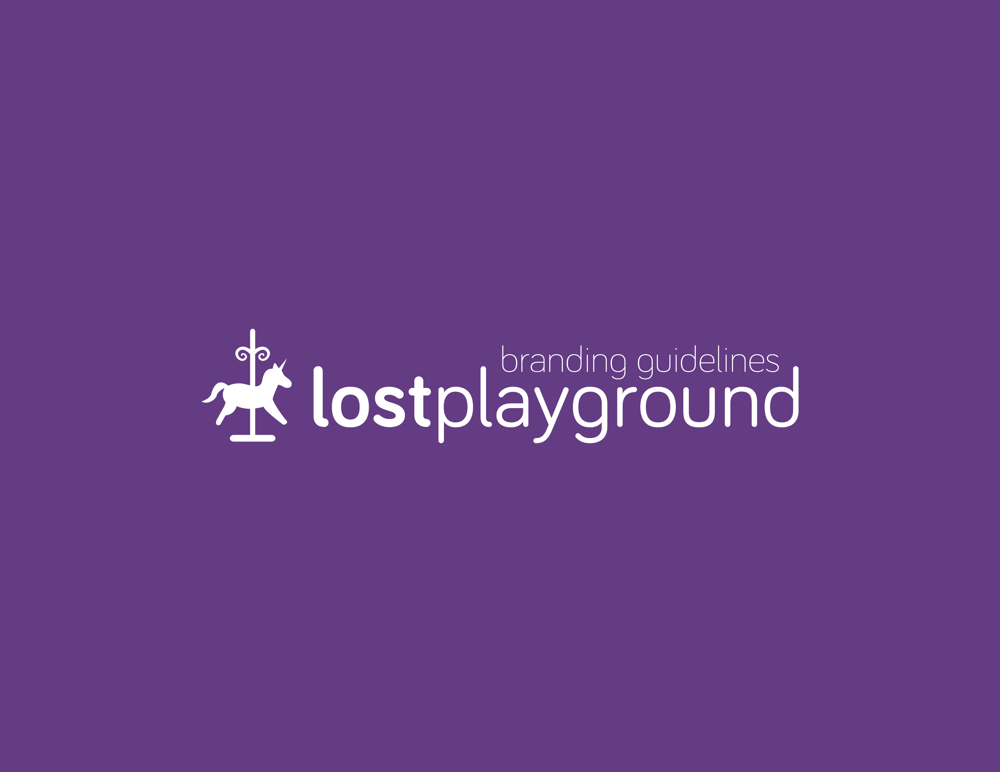
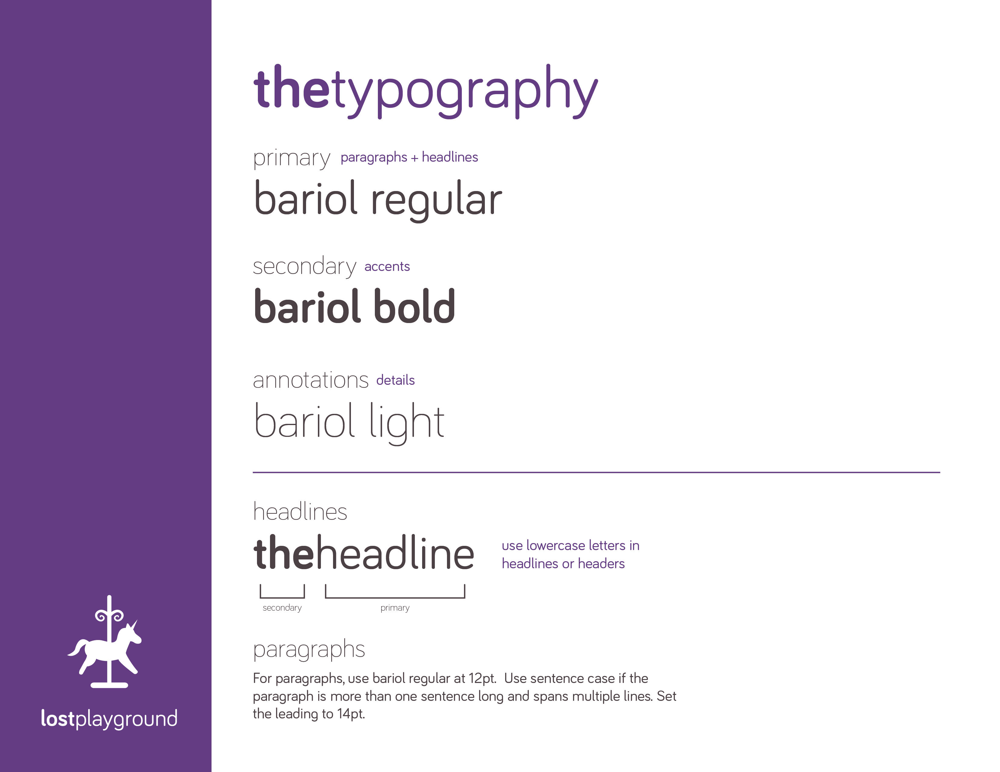
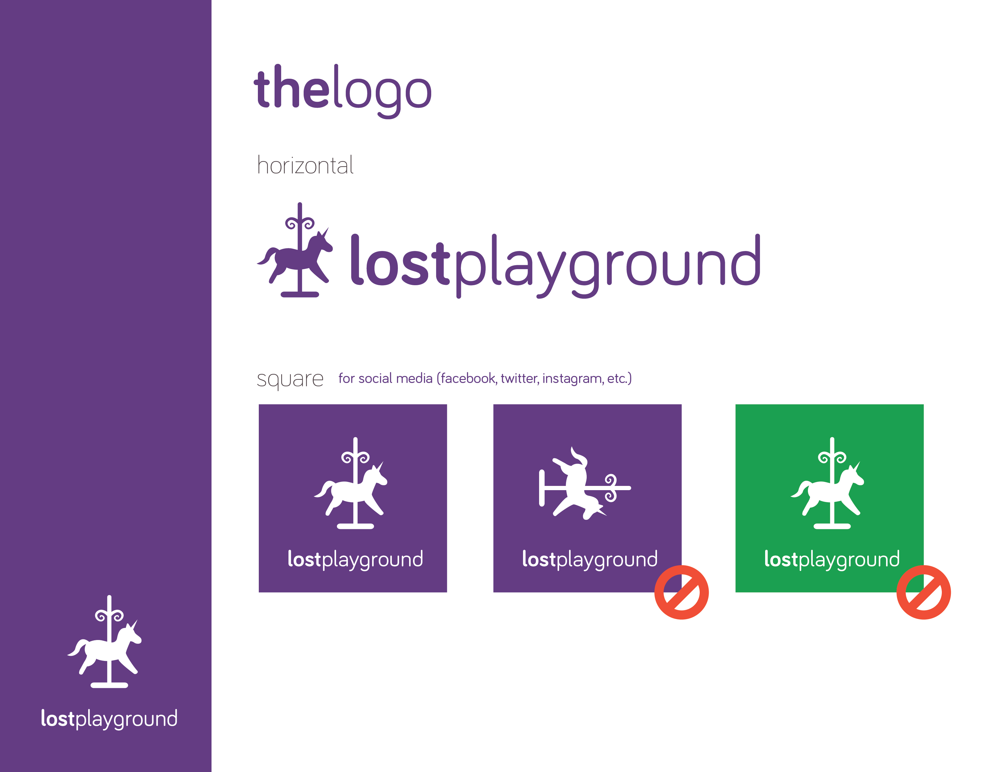
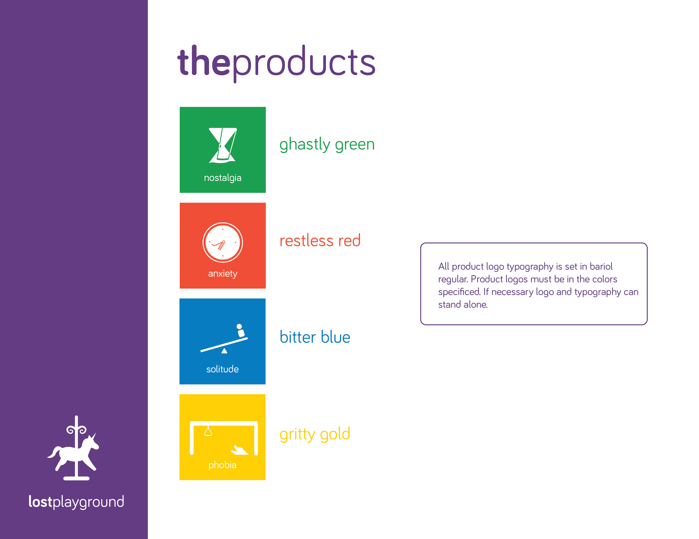
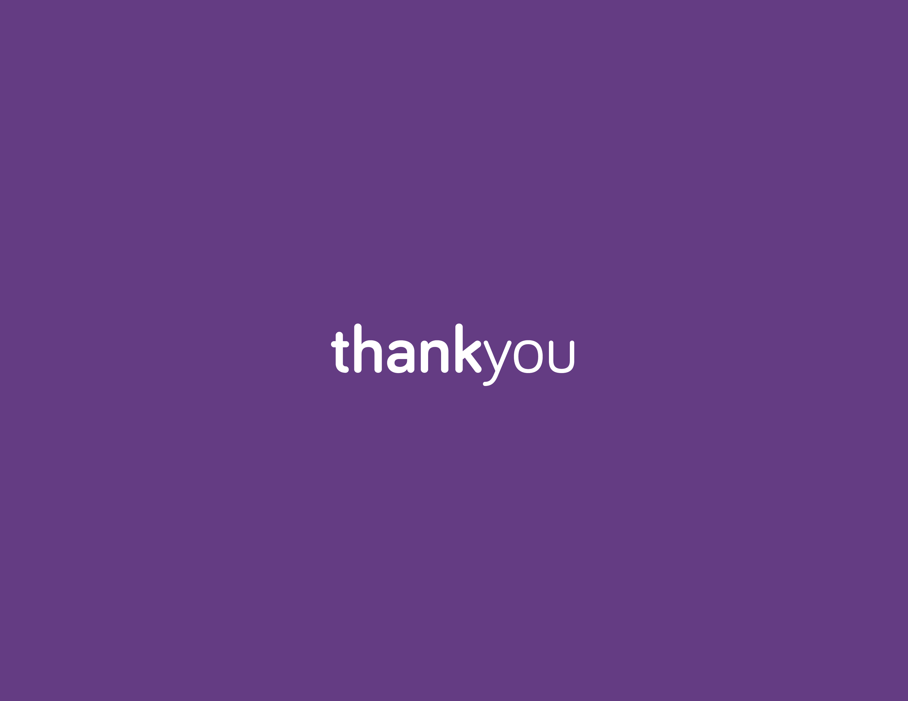

Product Design
lostplayground
Summary
lostplayground is a company that toys with your emotions. Nostalgia, their latest product, is a swing that plays songs (mostly TV show themes) from the swinger's childhood. Nostalgia in its current form is aimed at college-aged students, with the sounds hailing from the 90s. The goal of Nostalgia is that the higher and longer a person swings, the farther back in time they are transported through their memories and nostalgia for childhood. In this way, we aim to remind people to find time for playfulness in their lives (just like stumbling across Nostalgia) and to change the meaning of old playground toys to people who think they've simply grown up and grown out of their youth.
This project was created during UC Berkeley's Critical Making course. Read the full report here.
Promo Video
Used Illustrator, After Effects, and Premiere
Product Demo
Behind the Design
Logo
For the logo, we were inspired by abandoned amusement parks especially like the horse here. Usually, horses are in a large group on a carousel. We created a logo with a solitary horse to emphasize the emotions brought about by our product line.
Typeface
We went with a round, friendly typeface which seems very child-like and playful.
Colors
Our colors are bright, fun and youthful. We want them to entice people to interact with our products. The color names are purposely ironic to display the true feelings brought about by our brand.
The Swing
Green is the color of new beginnings and fresh starts. Thus, we chose it to represent the Nostalgia. We wanted the brightness of the green seat to be contrasted by the rusty, grotesque chains. The aesthetic of the swing was inspired highly by abandoned playgrounds and parks.
For the swing itself, we were very lucky. Originally, we wanted to build our own swing from scratch using wood and rope. One of our teammates, however, happened to find a free swing on the side of the street. We used this to our advantage and spent time cleaning it up and incorporating hardware onto it.
Branding
- 
- 
-

- 
- 
- 